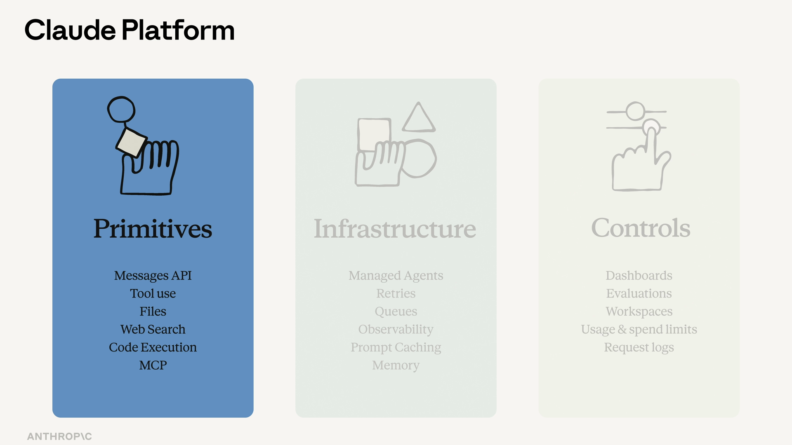
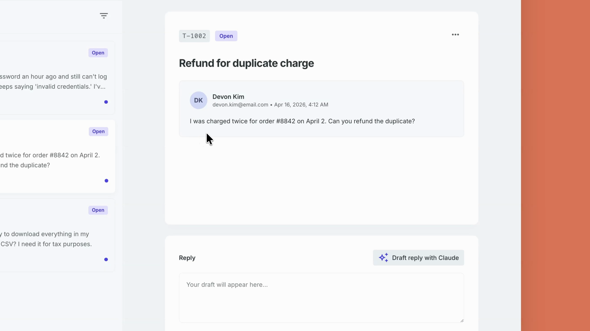
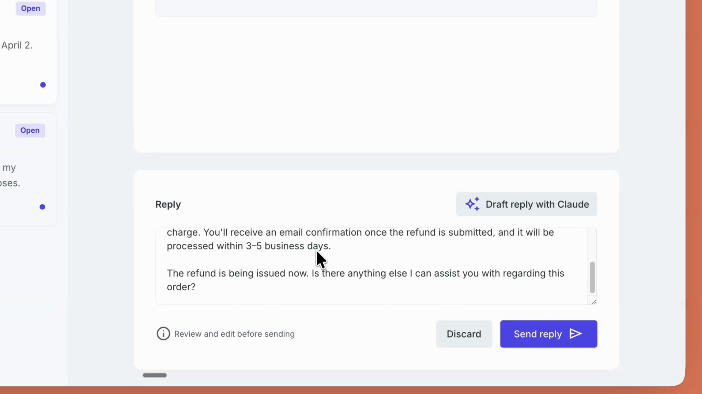

Что такое Claude Platform
Чему научитесь
Видео 2:49 и текст урока
К концу урока вы сможете:
- перечислить, из чего состоит Claude Platform: REST API, SDK, интерфейсы командной строки и консоль;
- описать три слоя платформы — примитивы, инфраструктуру и средства управления — и состав каждого;
- объяснить, за что отвечают параметры
model,max_tokens,systemиmessagesв вызовеmessages.create; - встроить Claude в уже существующий продукт на примере черновика ответа в службе поддержки.
Видео и текст урока.
Claude Platform — инфраструктура Anthropic для того, чтобы работать с Claude программно. Вместо того чтобы переписываться с Claude в браузере, вы отправляете из своего кода структурированные запросы и получаете структурированные ответы, контролируя каждую деталь: какую модель использовать, сколько токенов потратить, какими инструментами Claude может пользоваться и каким системным инструкциям он следует.
Если конкретнее, платформа состоит из нескольких частей:
- REST API, который можно вызывать из любого языка;
- SDK для разных языков программирования;
- интерфейсы командной строки;
- консоль, где вы управляете API-ключами, следите за статистикой использования, разворачиваете managed agents и тестируете промпты.
Три слоя платформы
Платформу удобно представлять как три слоя, один поверх другого.
- Примитивы — строительные блоки API, настроенные под Claude. Это Messages API, tool use, файлы, веб-поиск, выполнение кода, MCP-серверы и skills. Именно их вы и вызываете из своего кода.
- Инфраструктура — то, что нужно, чтобы строить и масштабировать агентные системы, которые уже переросли прототип. Managed agents, повторные попытки (retries), очереди, наблюдаемость (observability) — вся та обвязка, благодаря которой всё продолжает работать, когда один вызов Claude превращается в тысячу.
- Средства управления — инструменты для эксплуатации этих систем в продакшене, например дашборды и evals. Это ручки настройки, которыми пользуется ваша команда, когда система уже запущена.

Коротко: строите из примитивов, масштабируете на инфраструктуре, эксплуатируете под контролем (build with primitives, scale on infrastructure, run with control).
Эта структура видна и в самой Claude Console: там находятся слои инфраструктуры и управления. Например, на странице Sessions перечислены сессии ваших managed agents, а страница Usage показывает, как вы используете API.
Реальный пример: черновики ответов в службе поддержки
Допустим, вы отвечаете за простое приложение службы поддержки (help desk), и вас попросили добавить функцию: составлять черновик ответа по содержанию тикета в тоне и по правилам вашей команды. Эту функцию вы хотите повесить на кнопку в интерфейсе.

Это идеальный случай для Messages API. Порядок действий такой:
- создать клиент;
- загрузить тикет, к которому относится переписка;
- вызвать
messages.create; - вернуть ответ кнопке, чтобы она его отобразила.
import anthropic
client = anthropic.Anthropic()
response = client.messages.create(
model="claude-haiku-4-5", # Haiku: a good fit for a simple drafting task
max_tokens=1024,
system=TONE_AND_GUIDELINES,
messages=[
{"role": "user", "content": ticket_content}
],
)
draft = "".join(block.text for block in response.content if block.type == "text")
У каждого параметра своя задача:
model— какая модель обрабатывает запрос. Здесь это Haiku: составить черновик ответа — простая задача.max_tokens— ограничивает длину ответа Claude.system— системный промпт, в котором вы задаёте роль Claude. Сюда помещают нужный тон и правила.messages— массив объектов. Рольuserсообщает Claude, что это ввод пользователя; туда и помещают текст тикета.
Затем вы забираете ответ и возвращаете его кнопке для отображения. Готово.

От «задать Claude вопрос» к «Claude — часть моего продукта»
Обратите внимание, что произошло в этом примере: вы не строите чат-бота с нуля. Вы встраиваете Claude в уже существующий продукт и подключаете его через API.
В этом и состоит главная идея. Claude Platform — ваш доступ на уровне API к моделям, инструментам и инфраструктуре Claude. С ней вы переходите от «задать Claude вопрос» к «Claude — часть моего продукта».
А когда вашему продукту нужны агенты, платформа не просто выдаёт вам модель. С managed agents она сама их и запускает.
Итог
- Claude Platform — инфраструктура Anthropic для программной работы с Claude: REST API, SDK, CLI и консоль для ключей, статистики использования, managed agents и тестирования промптов.
- Её удобно представлять как три слоя: примитивы (Messages API, tool use, файлы, веб-поиск, выполнение кода, MCP-серверы, skills), инфраструктура (managed agents, повторные попытки, очереди, наблюдаемость) и средства управления (дашборды, evals).
- Коротко: строите из примитивов, масштабируете на инфраструктуре, эксплуатируете под контролем.
- Один вызов
messages.createдаёт полный контроль над моделью, длиной ответа, системным промптом и вводом пользователя — этого хватает, чтобы встроить Claude в существующую функцию, например в составление черновиков ответов службы поддержки. - С платформой вы уже не просто задаёте Claude вопросы, а делаете его частью своего продукта; с managed agents она может и сама запускать ваших агентов.
Дальше
Следующий урок — «Первый запрос к API»: получим ключ, установим SDK и отправим Claude настоящую задачу, а не просто приветствие.
Оригинал урока: What is the Claude Platform?.